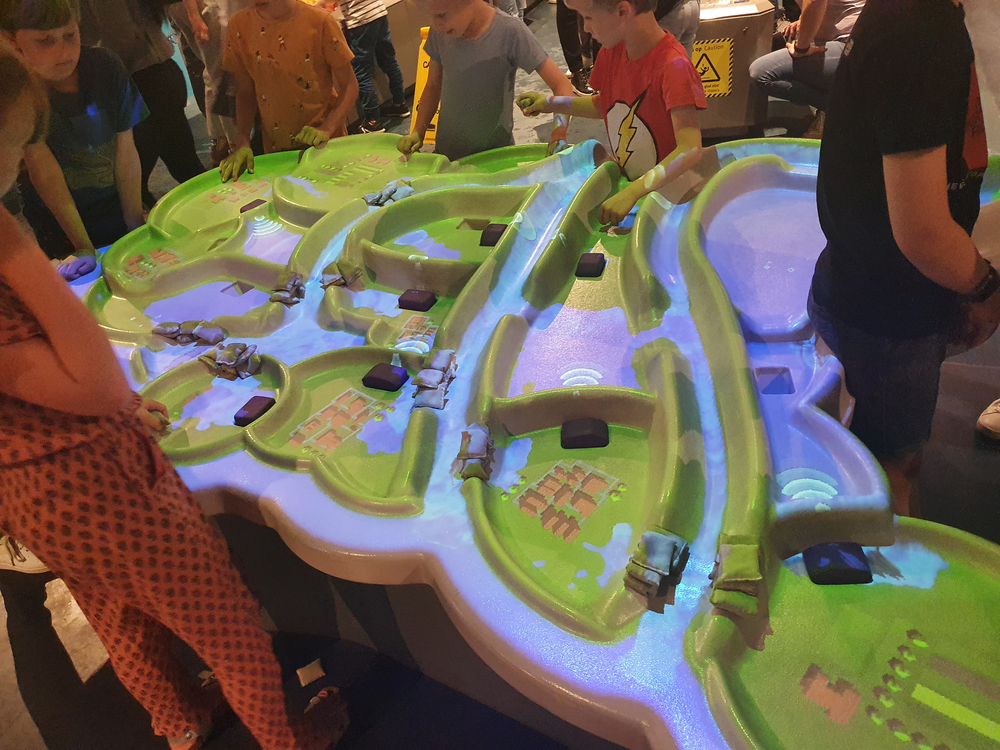
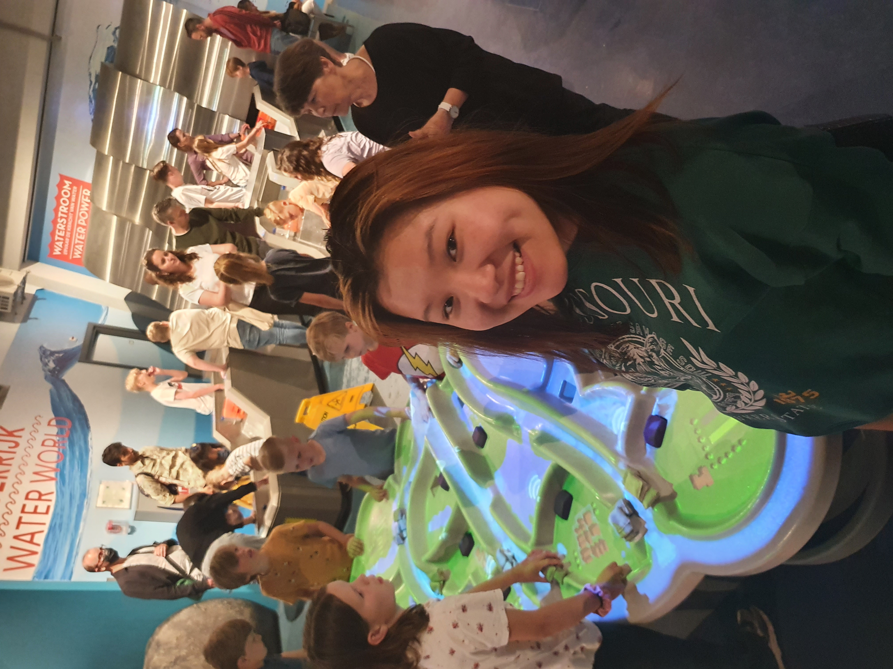

I have chosen Nemo Museum as the destination for my excursion visit. I have also selected the game installation 'Battle against water' to be most suited project due to its interactive and playful nature using HCI technologies.


Installation Project: Battle Against Water
The intended goal of the installation is to introduce to its visitors the process of strategically collaborating with each other, planning and managing the flow of water so that flooding could be prevented.
In terms of interactions and reactions, participants can use 2 methods, pumping stations using pumps, or raising dikes with mini sand bags to “manage water”, by changing the direction and flow of water so that the land does not flood and affect the surrounding residential areas. The goal of the game is for visitors to cooperate together with each other to keep the polders dry, or otherwise make decisions to flood them to see the consequences. On the other hand, it also presents knowledge of the natural landscape and national problems faced by the Netherlands to the country’s next generation.
In terms of technology, sensors and actuators, the game is developed to be interactive with Kinect and projected on to a polyurea coating provided by Plastic Coatings Nederland for this special 'water table' so that the surface is perfect for the projected game and will not be destroyed by the hundreds of visitors who play with it every day.
I find this project interesting because I felt inspired by the dynamic and lively the project attempt to educate and cultivate younger generations about an important societal problem that requires creative solutions, as well as the culture and natural constraints of the Netherland’s landscape. It also teaches visitors an important lessons about collaboration in the sense that without each other’s help, one won’t be able to solve a large scaled problem all by one self, thereby emphasising the importance of collaboration. On a technological level, the project is interesting because it demonstrated the possibility of showcasing an interactive virtual miniature world on a tangible surface that enables its participants to “learn by doing” by performing actions. It makes me wonder about a range of real life applications for this idea, such as projecting the landscape of a district/school/hospital/military base to virtually educate visitors with virtual fire drill/ nuclear/ war escape route practice.